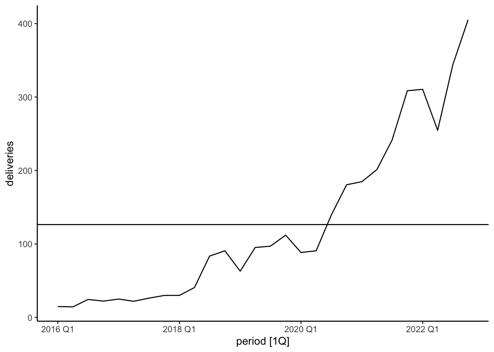
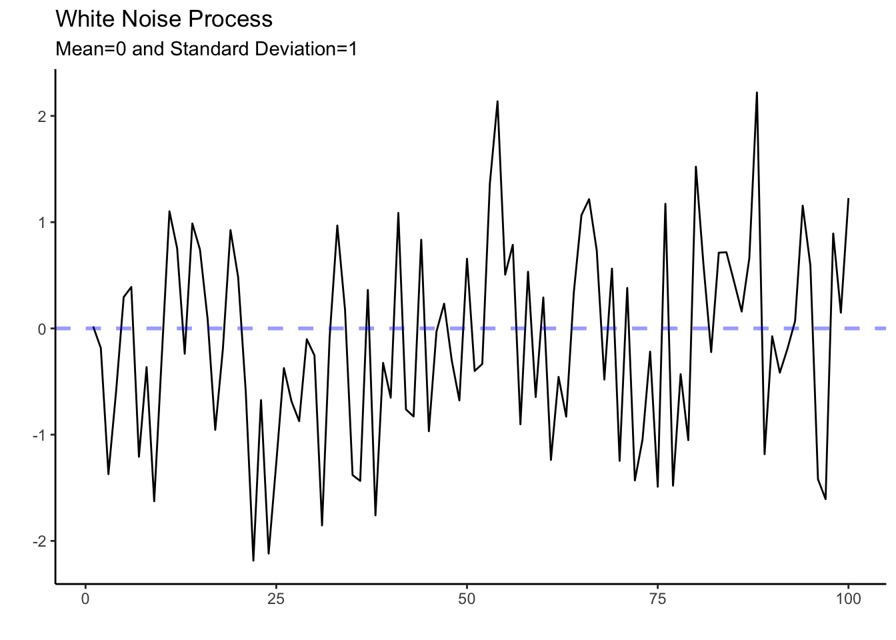
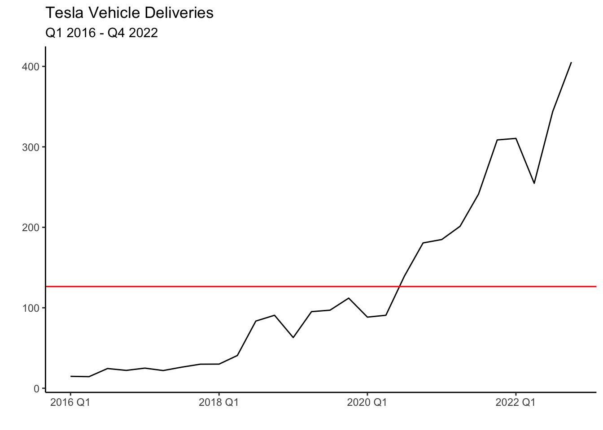
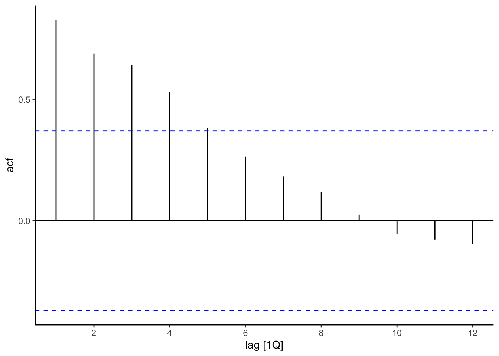
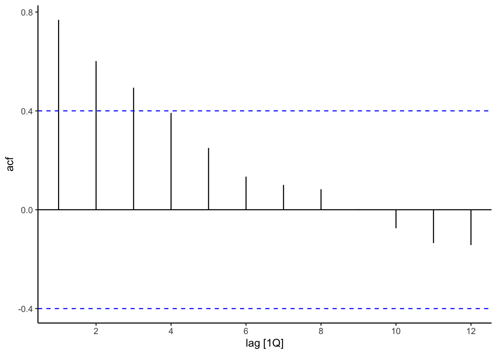
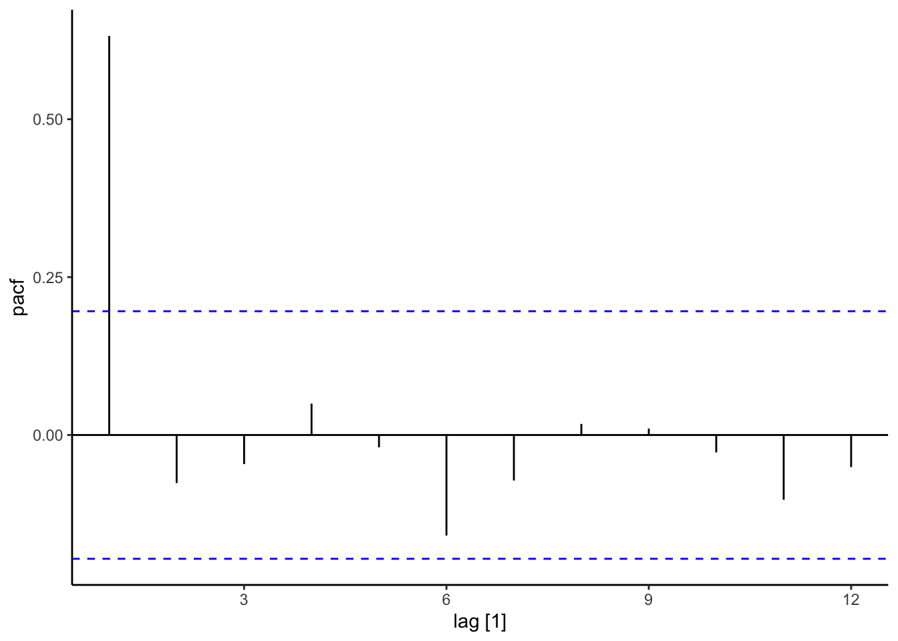
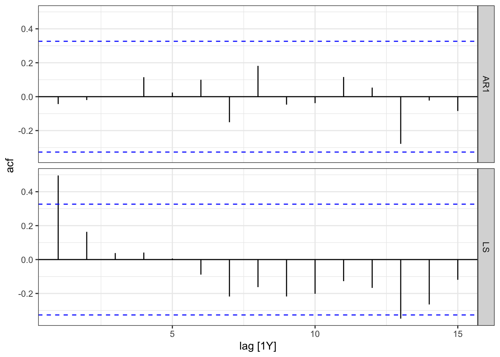
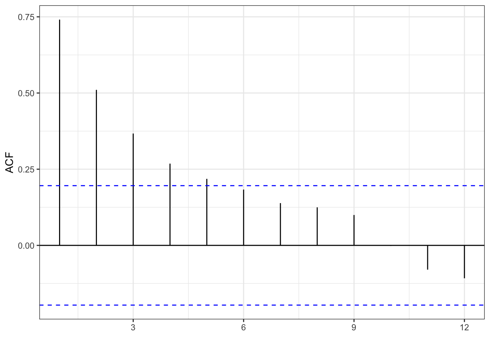
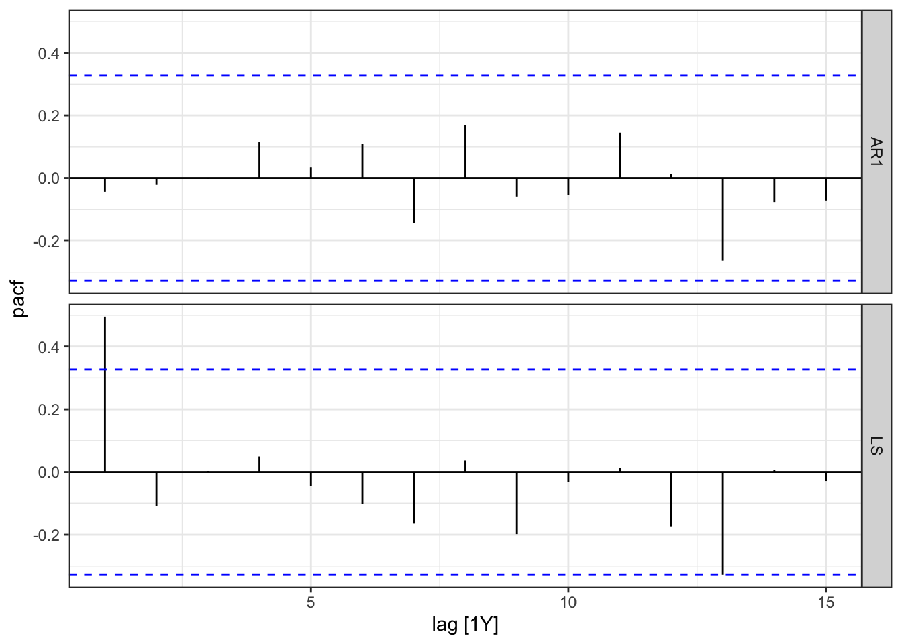

6 ARIMA
In this section we will be introducing the ARIMA model. The ARIMA model is essential in any forecaster’s toolbox as it performs well in forecasting series with time dependencies and seasonality. Before learning about the ARIMA model, a few concepts have to be introduced such as stationarity, autocorrelation and lags. These are crucial in understanding the modeling procedure. The chapter then proceed in explaining each components of the ARIMA model by applying it to some business data.
6.1 Preliminaries
White Noise
In the context of time series, white noise refers to a sequence of random data points that have no correlation to each other. It is often used as a benchmark or reference for other types of time series data, such as those that exhibit patterns or trends. White noise is typically modeled as a Gaussian distribution with a mean of zero and a constant variance. The term “white” refers to the fact that the noise has a flat power spectral density, meaning that it contains equal amounts of power across all frequencies.
Stationarity
A time series is said to be stationary if its statistical properties do not change over time. In other words, a stationary time series has a constant mean, variance, and auto-covariance, regardless of the time at which the series is observed.
The main reason for making the time series stationary is that it is required in many time series models (including the ARIMA model). These models make predictions about future values of the time series based on past values, and the statistical properties of the past values are used to inform these predictions. If the statistical properties of the time series are changing over time, then the models may not work well, as the assumptions underlying them would not be met.
Additionally, non-stationary time series may contain trends and/or seasonal patterns, which can make it difficult to model and forecast the series. By removing these patterns and making the series stationary, it becomes easier to model and forecast.
In general, before modeling and forecasting, we will check whether the series has a trend or heteroskedasticity. To eliminate the trend in the series we will use the first difference of the series. We can do this in R by using the difference() function. For example consider Tesla’s quarterly vehicle deliveries from 2016-2022.
Deliveries have mostly been in an upward trend, which makes sense as the company is currently growing. This series seems to not be stationary since it crosses the mean once and never revisits it. An easy way to make the series stationary (make it fluctuate around the mean) is to find the first difference. Below is the graph of the integrated series.
deliveries %>%
as_tsibble(index=period, regular=T) %>% autoplot(difference(deliveries)) + theme_classic()
Note how the series now fluctuates around the mean of zero. Conceptually, although deliveries are constantly rising, the change in the delivery of vehicles from quarter to quarter sometimes increases and sometimes decreases and on average their is no change. You will note that the series does exhibit some heteroskedasticity, as the variance of the series seems to be low from the period of 2016-2018 while significantly higher for the period after. To normalize the variance of the series we can make a Box-Cox transformation.
lambda <- deliveries %>% as_tsibble(index=period, regular=T) %>%
features(deliveries, features = guerrero) %>% pull(lambda_guerrero)
deliveries %>% as_tsibble(index=period, regular=T) %>%
autoplot(box_cox(difference(deliveries), lambda)) +
labs(y = "")+ theme_classic()
As you can see this series is a bit more homoskedastic than the series without the transformation. Note also that both transformations can be undone by using an inverse function, so that we can return to the delivery of vehicles.
To test whether a series is stationary or not we can use the unitroot_kpss feature. In general, a low p-value allows us to reject the null of hypothesis of stationarity.
deliveries %>% as_tsibble(index=period, regular=T) %>%
features(deliveries, features = c(unitroot_kpss, unitroot_ndiffs)) %>% gt()| kpss_stat | kpss_pvalue | ndiffs |
|---|---|---|
| 0.9465391 | 0.01 | 2 |
The test reports a p-value of 0.01 when it is below 0.01 and 0.1 when it is above 0.1. Hence, the p-value confirms that Tesla deliveries are non-stationary and that two differences are required to make the data stationary.
The autocorrelation function
Autocorrelations are essential in time series analysis since they indicate the degree of similarity between a time series and a lagged version of itself (a previous period). They help identify patterns and trends in the data allowing us to predict future values of the series. For example, suppose a time series exhibits a strong positive autocorrelation at a lag of \(k\) periods. In such a case, the value at time \(t+k\) will likely be similar to that at time \(t\). Formally we can write the autocorrelation as:
We can use this metric to identify which periods are influential for our targeted forecast periods. As a consequence, we can illustrate a function of a series and it’s correlation with its lags to identify/quantify crucial periods. This time let’s inspect personal income growth in the state of California. Below we load the data and create the train and test sets.
library(fpp3)
library(tidyverse)
PI<-read_csv("https://jagelves.github.io/Data/PersonalIncome.csv")
PI %>% as_tsibble(index=Date) %>%
filter_index(1970~2005) -> PI_train
PI %>% as_tsibble(index=Date) %>%
filter_index(2006~2021) -> PI_testThe autocorrelation function can now be constructed by using the ACF() function and plotting it with autoplot() as shown below.
PI_train %>%
ACF(lag_max = 12,PI_Growth) %>%
autoplot() + theme_classic()
The plot shows that the correlation of the series with its first lag is strongest, and that there is continuous decay in the strength of the correlation as the lags get larger. The blue lines which autocorrelations are statistically different from zero (significant) at the 5% level. As you can, lags 1-4 are statistically significant.
The partial autocorrelation function
As with the ACF, the partial autocorrelation function (PACF) summarizes the relationships between a series and its lags. However, the relationships of intervening lags are removed. The sample partial autocorrelation at lag \(k\) is the correlation that results after removing the effect of any correlations due to the terms at shorter lags.
Formally speaking, when we calculate the autocorrelation between \(y_t\) and \(y_{t+k}\), information flows from \(t\) to \(t+k\), so that indirectly \(\rho_k\) accounts for the contribution of lags between \(t\) and \(t+k\). A series of regressions would allow us to calculate the PACF. Luckily, R calculates these easily for us as shown below:
PI_train %>%
PACF(lag_max = 12,PI_Growth) %>%
autoplot() + theme_classic()
The graph shows that the series has a strong correlation only with its first lag. Specifically, lag 2, 3, and 4 seemed to have been correlated with the series (see ACF), but this was mainly because of the influence of lag 1.
6.2 The AR(p) model
In the previous section, we identified the growth of personal income in California to have a decaying ACF and a single significant spike (at lag 1) in the PACF. These results can be generated with an AR(1) model. Specifically, an AR(1) model is of the form:
Note that this model just uses the first lag of the series as the single independent variable. We can easily simulate some data based on this model using R.
y<-c(0)
phi<-0.7
const<-1
nrep<-100
for (i in 2:nrep){
y[i]=const+phi*y[i-1]+rnorm(1,0,0.5)
}Now we can use the data to see what the ACF looks like for a AR(1) process.
tsibble(y=y,period=seq(1,length(y)),index=period) %>% ACF(lag_max = 12, y) %>% autoplot()+theme_classic()
Note the resemblance of the ACF of the simulated variable to that of the deliveries of Tesla. Now let’s take a look at the PACF.
tsibble(y=y,period=seq(1,length(y)),index=period) %>% PACF(lag_max = 12, y) %>% autoplot()+theme_classic()
Once again, if you compare the PACF to the one in personal income growth you can see the resemblance in that there is one significant spike and all other partial autocorrelations are not statistically different from zero. We can model personal consumption growth with an AR(1) process.
6.3 Modeling and Residuals
Let’s model personal consumption using the AR(1) model. We’ll also estimate the Random Walk with drift to compare. We can do this by using the model() function.
PI_fit<-PI_train %>%
model(AR1 = AR(PI_Growth ~ order(1)),
LS = TSLM(PI_Growth ~ Date))
coef(PI_fit)# A tibble: 4 × 6
.model term estimate std.error statistic p.value
<chr> <chr> <dbl> <dbl> <dbl> <dbl>
1 AR1 constant 1.80 0.820 2.19 0.0354
2 AR1 ar1 0.702 0.121 5.80 0.00000156
3 LS (Intercept) 338. 74.8 4.51 0.0000733
4 LS Date -0.167 0.0376 -4.43 0.0000931 Note how the estimated coefficient for the AR1 process resembles the one in our simulation. However, the estimation of this model suggest a constant of 1.8 instead of 1.
errors_PI<-augment(PI_fit)
errors_PI %>% select(.resid) %>% ACF(.resid) %>%
autoplot() + theme_bw()
Note how the errors of the AR(1) model resemble white noise. This suggests that we have identified the pattern in the data and modeled it correctly with an AR(1) process. In other words, there is nothing left to model since the errors are completely random. This is not the case for the LS model, since we still observe some significant spikes (lag 1 and lag 13) in the ACF function.
errors_PI %>% select(.resid) %>% PACF(.resid) %>%
autoplot() + theme_bw()
The PACF once again shows no pattern for the residuals of the AR1 model and some significant lags for the LS model. We can further choose between these two models by looking and the AIC, AICc, or BIC.
# A tibble: 2 × 5
.model sigma2 AIC AICc BIC
<chr> <dbl> <dbl> <dbl> <dbl>
1 AR1 4.30 -20.3 -19.9 -17.1
2 LS 5.51 65.4 66.1 70.1Here we note that the AR1 model performs better in all of the metrics as the are significantly lower than those for the LS.
PI_fc<-PI_fit %>% forecast(new_data = PI_test)PI_fc %>% accuracy(PI_test) # A tibble: 2 × 10
.model .type ME RMSE MAE MPE MAPE MASE RMSSE ACF1
<chr> <chr> <dbl> <dbl> <dbl> <dbl> <dbl> <dbl> <dbl> <dbl>
1 AR1 Test -1.51 3.47 2.45 -116. 157. NaN NaN 0.331
2 LS Test 2.60 4.43 3.87 22.5 107. NaN NaN 0.483PI_fc %>% filter(.model=="AR1") %>% autoplot() + theme_classic() +
autolayer(PI_train, PI_Growth) +
autolayer(PI_test, PI_Growth)